Selected work
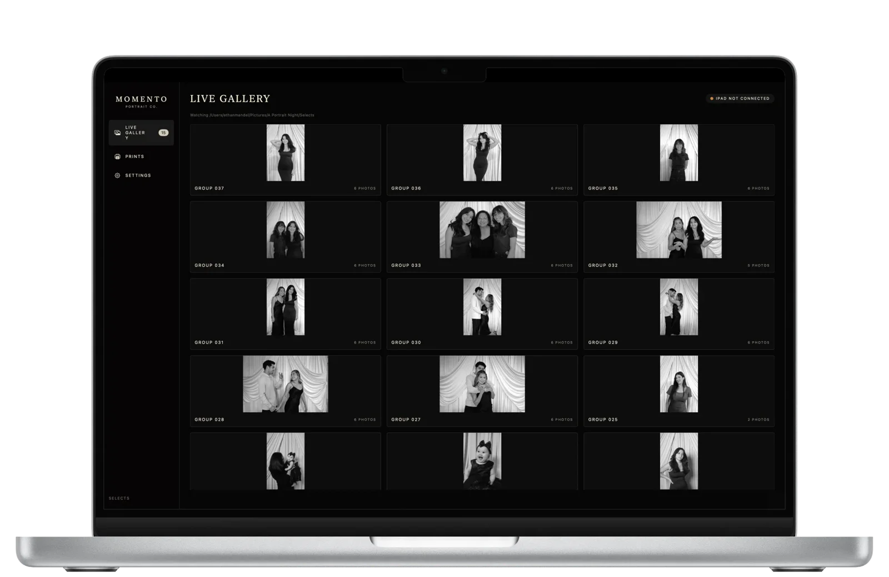

Studio & software · New
Momento
Wedding portraits, printed on the spot. A portrait studio I co-run, with a Mac app and an iPad app I designed and built to run it.
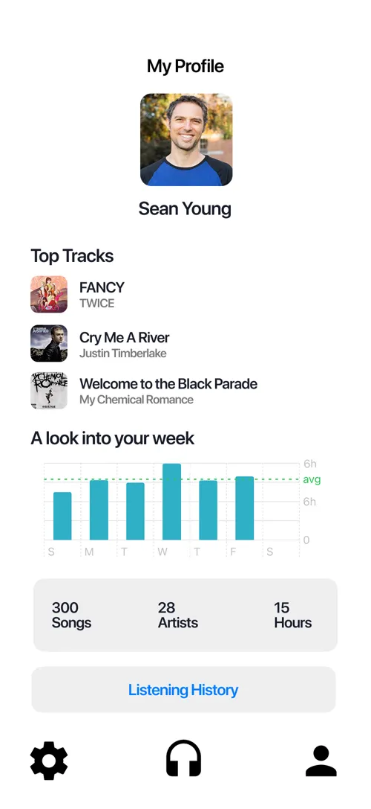
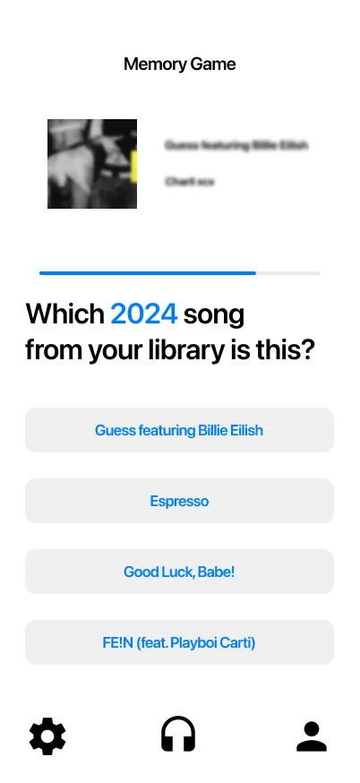
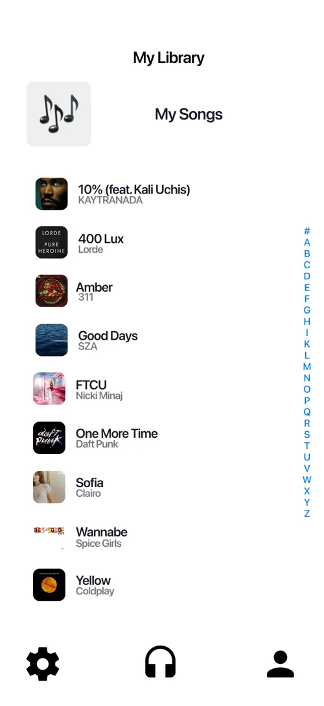
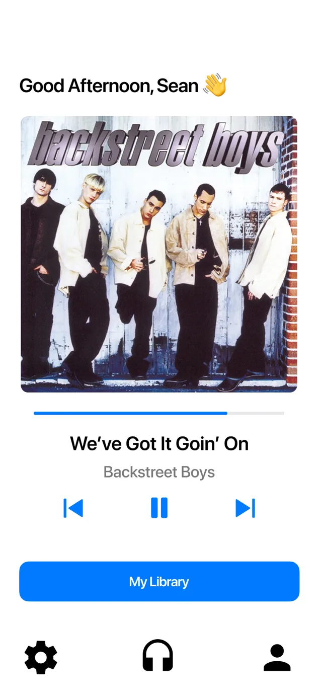
App concept
Remembra
Memory care through familiar music.
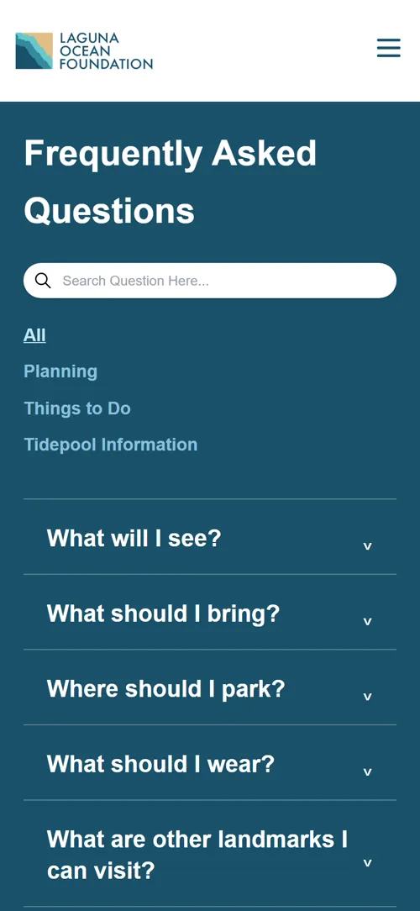
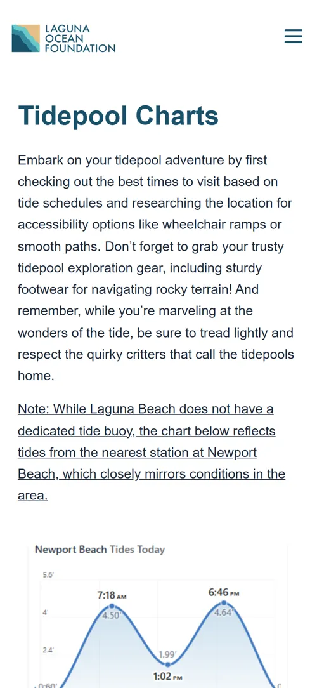
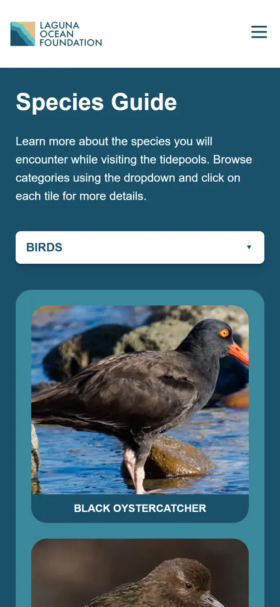
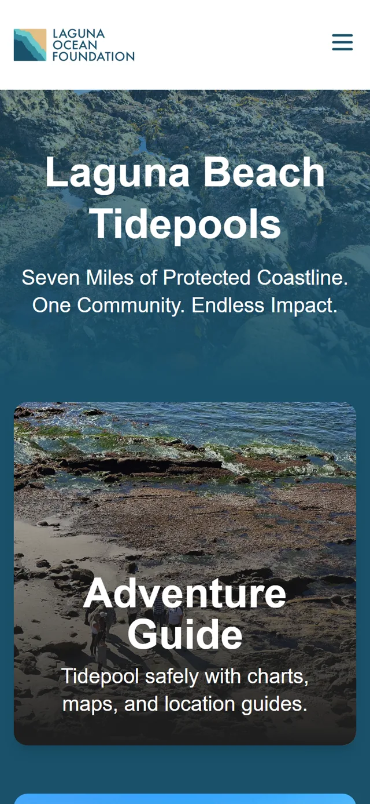
Website redesign
Laguna Ocean Foundation
An easier way to plan a tidepool visit.
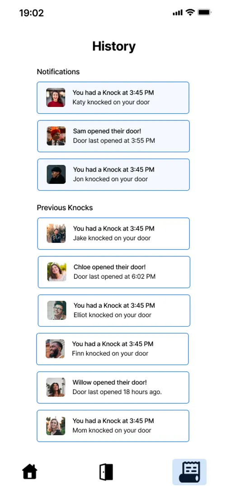
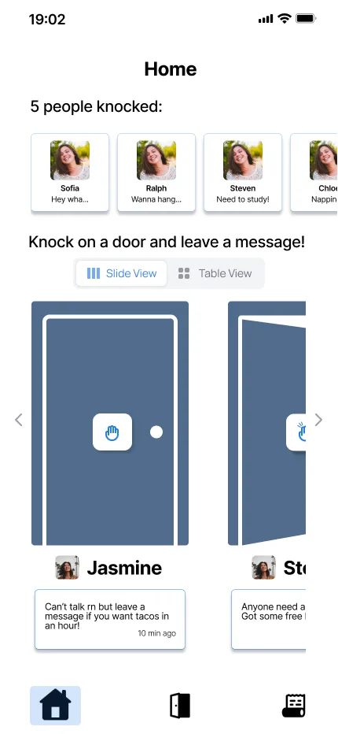
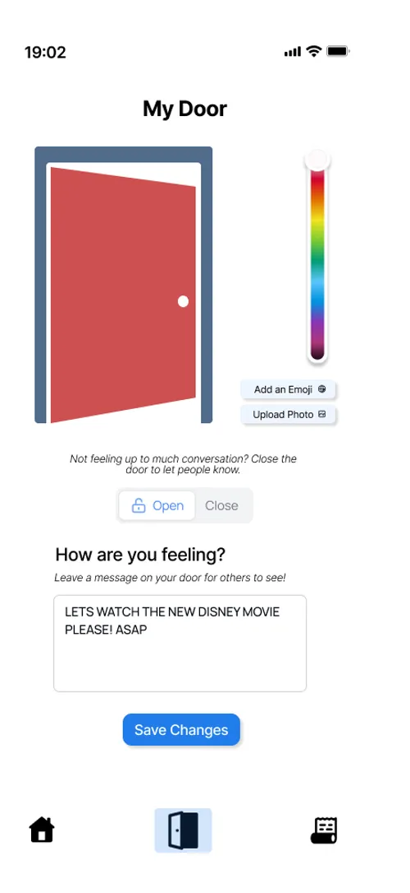
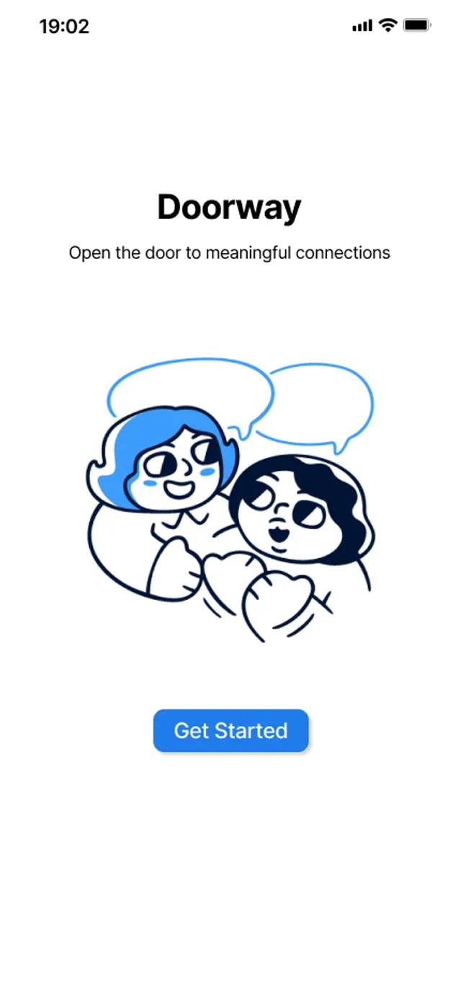
Product concept
Doorway
Nudging people to reach out first.